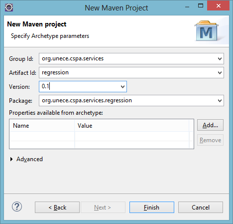
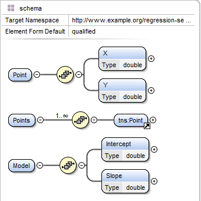

The aim of this tutorial is to show concretely how an R script can be wrapped in a REST service so as to be usable in CSPA architectures. We will take the example of a linear regression service.
The Java development stack will be used for maximum portability. All software components used or produced in this tutorial are free and open source.
From a high-level view, a linear regression takes a set of points and calculates the line that best fits those points (we will stay in dimension 2 in this example), as well as various statistics that qualify the quality of the fitting.
Here, we will limit ourselves to returning the line only, characterized by its intercept (ordinate at 0) and slope.
More information would be needed to produce proper CSPA service definition and specification, but we focus here on the description of a specific service implementation.
We will use R for the regression operation, and wrap the R script execution into a REST web service on a Java platform.
We will implement the REST service using the Jersey JAX-RS reference implementation.
The following software should be installed:
Eclipse (Java EE IDE for Web Developers distribution) with Maven plugin. The active Java machine for Eclipse should be a JDK (see Window → Preferences → Java → Installed JREs).
The Jersey Webapp Archetype should be installed (this can be done while creating the project, see below).
In Eclipse, create a new Maven project (File → New → Maven Project). Choose the project location or accept the default workspace location, then select the jersey-quickstart-webapp archetype. If not present, the archetype can be installed by clicking “Add Archetype…”
Indicate the Maven parameters for the project, for example:
Click on “Finish” to create the project. A quick-start project layout is created in Eclipse Project Explorer.
Some changes should be made to the project created by default in order to adapt it to our needs:
index.jsp in the src/main/webapp folder;pom.xml file, delete lines 47 and 52 to uncomment the MOXy dependency because we would like our service to support JSON;web.xml file (located in src/main/webapp/WEB-INF), change the Jersey servlet mapping: in the url-pattern (line 16), replace /webapi/* by something more meaningful in our context, for example /model/*.
The service inputs and outputs will be formalized with XML Schema. JAXB will then be used to generate the corresponding Java classes.
In the Project Explorer, right-click on the src/main/resources folder and select New → Other… → XML → XML Schema File. Give the file a name, for example regression-service.xsd. Insert between the <Schema> and </Schema> tags the definition of the business objets:
<element name="Point">
<complexType>
<sequence>
<element name="X" type="double"/>
<element name="Y" type="double"/>
</sequence>
</complexType>
</element>
<element name="Points">
<complexType>
<sequence maxOccurs="unbounded">
<element ref="tns:Point"/>
</sequence>
</complexType>
</element>
<element name="Model">
<complexType>
<sequence>
<element name="Intercept" type="double"/>
<element name="Slope" type="double"/>
</sequence>
</complexType>
</element>
Visually, this corresponds to the following design:
In the Project Explorer, right-click on the newly-created XSD file and select Generate → JAXB Classes… Confirm the destination project, indicate the destination package (for example org.unece.cspa.services.regression.objects) and click on “Finish” to generate the Java classes.
The treatment will consist in executing a R script producing the linear regression model from the input data. There are different possibilities for including R calculations in Java programs: here we will use Renjin.
In order to make Renjin available in the program, we have to change the Maven pom.xml file to add the Renjin dependency and the address of the repository where Renjin Maven artifacts are published. This is clearly described by Renjin online documentation.
The repository is declared by adding the following section:
<repositories>
<repository>
<id>bedatadriven</id>
<name>bedatadriven public repo</name>
<url>https://nexus.bedatadriven.com/content/groups/public/</url>
</repository>
</repositories>
The Renjin dependency must be inserted in the dependencies section:
<dependency>
<groupId>org.renjin</groupId>
<artifactId>renjin-script-engine</artifactId>
<version>RELEASE</version>
</dependency>
The Maven quick-start project contains an example service implementation resource: MyResource.java. We have to modify this resource in order to fit our needs.
First, rename the class to better reflect its function: select MyResource.java in Eclipse Project Explorer and rename it (Alt+Maj+R) Linear.java. Double-click on the class to open it in the editor.
Similarly, in the @Path annotation, replace "myresource" with "linear". This means that Jersey will delegate the handling of HTTP request ending with /linear to this class.
Since our input and output classes are generated by JAXB, corresponding objects can be marshalled and unmarshalled from and to either XML or JSON. To reflect this, we replace the simple @Produces(MediaType.TEXT_PLAIN) annotation by:
@Consumes({MediaType.APPLICATION_XML, MediaType.APPLICATION_JSON})
@Produces({MediaType.APPLICATION_XML, MediaType.APPLICATION_JSON})
Additionally, the service design specifies that the resource will receive data (points) and send back results. This corresponds to the behaviour of a HTTP POST request, not GET. Therefore, we replace the @GET annotation by a @POST annotation.
Finally, we modify the method signature according to our service definition:
public Model regression(Points points) {
return null;
}
The basic method for performing linear regression in R is to use the lm() function (see the R manual). For example, lm(y ~ x) will return an object containing various statistical results of the linear fitting of y on x: regression coefficients, standard errors, etc.
In order to run the lm() function, we need a Renjin script engine:
RenjinScriptEngineFactory factory = new RenjinScriptEngineFactory();
RenjinScriptEngine engine = factory.getScriptEngine();
engine.eval("lm(y ~ x)");
Here, x and y would be the vectors formed by the coordinates of our input points and we have to transmit these data to the script engine.
Renjin has an extensive library of classes corresponding to different R object types (see online documentation). We can use DoubleVector objects (vectors made with Java double numbers) to pass our coordinates, more specifically instances of the concrete subclass DoubleArrayVector, which can be easily constructed from our Points:
List<Double> xCoordinates = new ArrayList<Double>();
List<Double> yCoordinates = new ArrayList<Double>();
for (Point point : points.getPoint()) {
xCoordinates.add(point.getX());
yCoordinates.add(point.getY());
}
DoubleVector xVector = new DoubleArrayVector(xCoordinates);
DoubleVector yVector = new DoubleArrayVector(yCoordinates);
The vectors are then made available to the R script through the engine:
engine.put("x", xVector);
engine.put("y", yVector);
The lm() function produces an R list of objects containing the different characteristics of the resulting model. Ths list can be mapped to a Renjin ListVector. We are interested by the coefficients element:
ListVector rModel = (ListVector)engine.eval("lm(y ~ x)");
Vector coefficients = rModel.getElementAsVector("coefficients");
Finally, we construct our own simple Model return object:
Model model = new Model();
model.setIntercept(coefficients.getElementAsDouble(0));
model.setSlope(coefficients.getElementAsDouble(1));
The complete service class is thus:
package org.unece.cspa.services.regression;
import java.util.ArrayList;
import java.util.List;
import javax.script.ScriptException;
import javax.ws.rs.Consumes;
import javax.ws.rs.POST;
import javax.ws.rs.Path;
import javax.ws.rs.Produces;
import javax.ws.rs.core.MediaType;
import org.renjin.script.RenjinScriptEngine;
import org.renjin.script.RenjinScriptEngineFactory;
import org.renjin.sexp.DoubleArrayVector;
import org.renjin.sexp.DoubleVector;
import org.renjin.sexp.ListVector;
import org.renjin.sexp.Vector;
import org.unece.cspa.services.regression.objects.Model;
import org.unece.cspa.services.regression.objects.Point;
import org.unece.cspa.services.regression.objects.Points;
/**
* Service resource (exposed at "linear" path)
*/
@Path("linear")
public class Linear {
@POST
@Consumes({MediaType.APPLICATION_XML, MediaType.APPLICATION_JSON})
@Produces({MediaType.APPLICATION_XML, MediaType.APPLICATION_JSON})
public Model regression(Points points) {
List<Double> xCoordinates = new ArrayList<Double>();
List<Double> yCoordinates = new ArrayList<Double>();
// Transform list of points in two vectors x and y
for (Point point : points.getPoint()) {
xCoordinates.add(point.getX());
yCoordinates.add(point.getY());
}
DoubleVector xVector = new DoubleArrayVector(xCoordinates);
DoubleVector yVector = new DoubleArrayVector(yCoordinates);
// Start the R engine
RenjinScriptEngineFactory factory = new RenjinScriptEngineFactory();
RenjinScriptEngine engine = factory.getScriptEngine();
// Execute regression in R
engine.put("x", xVector);
engine.put("y", yVector);
ListVector rModel = null;
try {
rModel = (ListVector)engine.eval("lm(y ~ x)");
} catch (ScriptException e) {
return null;
}
// Send back coefficients extracted from result model
Vector coefficients = rModel.getElementAsVector("coefficients");
Model model = new Model();
model.setIntercept(coefficients.getElementAsDouble(0));
model.setSlope(coefficients.getElementAsDouble(1));
return model;
}
}
To create the war file, right-click on the project and select Run as → Maven install. The regression.war archive is created in the target folder. This file can be deployed in any servlet container, for example Apache Tomcat.
It is easy to test the service with a REST client browser extension like Postman for Chrome or HttpResquester for Firefox.
The image below gives an example of call to the service (deployed locally) using HttpRequester. JSON is used for request and response contents (set the Accept header to application/json in the Headers tab).
To test the service with XML, change the Accept and Content-Type headers to application/xml and enter for example the following data:
<?xml version="1.0" encoding="UTF-8"?>
<tns:Points xmlns:tns="http://www.example.org/regression-service" >
<tns:Point>
<tns:X>0.0</tns:X>
<tns:Y>0.0</tns:Y>
</tns:Point>
<tns:Point>
<tns:X>1.0</tns:X>
<tns:Y>1.0</tns:Y>
</tns:Point>
</tns:Points>
Nota bene: be careful to avoid any spaces before <?xml…. You can also omit the first line altogether.
A more visual test client is available here.
We presented a very simple example of how to build a CSPA service by wrapping an R script in a REST web service. The implementation was kept intentionally basic. For a real service, a lot of features should be improved: error management, logging, design of the objects, persistence of the R script engine, etc.
Nevertheless, the development strategy presented here can be reused for more complex services.